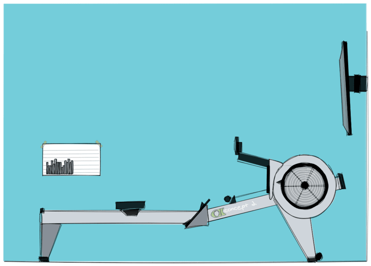
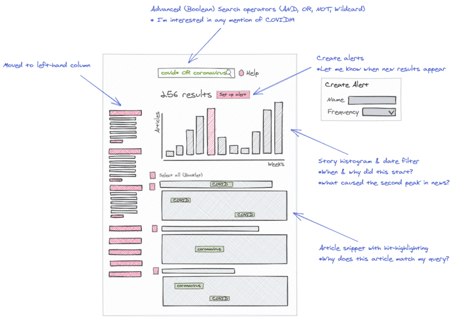
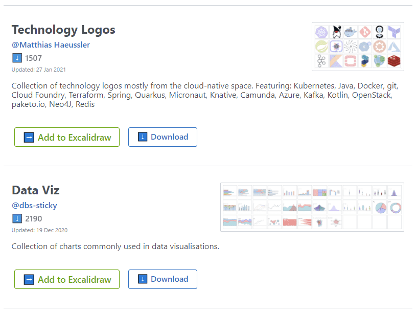

Drawing with Excalidraw
Excaliwhatnow?
Excalidraw is described by its creators as a "Virtual whiteboard for sketching hand-drawn like diagrams". I'd describe it slightly differently, I think I'd go with "a drawing tool that's so easy to use that you spend your time making sure the drawing is effective, rather than 'pixel-fiddling'".
Excalidraw is great for quickly creating diagrams (you can see lots of great examples on the bottom of this page), but it can be used for "sketch" style drawings, like the drawing below of my rowing setup.
Some of Excalidraw's features:
- runs in the browser
- supports real-time collaboration
- supports multiple export formats
- is secure (end-to-end encrypted)
- is vector based (so scales to all sizes)
- is very easy to learn (no "learning" required)
- is open source
- is free to use
How I use it
As a Product Manager, I'm often having to define what apps look like, how they're structured, what components they include etc. and I used to do this using hi-fidelity mock-up tools such as AxureRP (or even Adobe illustrator!). And to be honest, I wasted a lot of time obsessing over the size, colour and exact location of various page components. Once my company got serious about UX and started embedding dedicated UX resource within our squads, then it was no longer my responsibility to make my mock-ups pixel perfect.
This is where Excalidraw really shines (it's hard to be pixel perfect when there are no straight lines!), as its focus is on a "hand-drawn" aesthetic, it lends itself well towards the creation of "quick-and-dirty" sketches where the focus is to portray an idea or concept, rather than to represent a final pixel perfect design. Sketches can be created and altered quickly, and all from within a browser (important for those of us who work for large corporations and don't have the admin rights required to install apps on our PCs).
The mock-up below of a news search page took about 15mins to produce, but the sketch does highlight quite a few important features about the search page concept.
In addition to using it at work for mock-ups, it's also my "go-to" drawing app for this blog, as you can see in my post about my lockdown days.
Libraries make creating diagrams even quicker
As I've mentioned, one of the benefits of Excalidarw is the speed, but the existence of a small (but growing) community of users who share their Libraries makes it even faster to create diagrams.
Conclusions
I really can't recommend Excalidraw strongly enough, it's a great tool, built and maintained by a group of enthusiastic developers who are actively engaging with their users. But, the only way to see how good it really is, is to go and sketch something :-)
If you have any comments on this article then please get in touch via Twitter (@dbs_sticky).